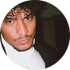

Início/Sobre Nós
Sobre Nós
Tecnologia a serviço de comunidades reais
O Conexão Segura nasceu de estudantes do programa Transforme-se, do Instituto PROA, com um objetivo claro: usar informação e tecnologia para tornar o cotidiano mais seguro e acessível.
Do Programa
Transforme-se
ao mundo real
O Conexão Segura nasceu da união de ideias, experiências e habilidades de estudantes do programa Transforme-se, do Instituto PROA. Somos oito integrantes como um propósito em comum: aproximar pessoas, valorizar comunidades e usar a tecnologia para contribuir para um cotidiano mais seguro.
O projeto nasceu da junção de experiências, perspectivas e habilidades diferentes — desenvolvimento, design, gestão de produto e metodologias ágeis — com o objetivo de criar algo que realmente faça diferença no cotidiano das pessoas.

Conexão Segura
Uma plataforma de informação cidadã desenvolvida por estudantes do programa Transforme‑se do Instituto PROA, com foco em segurança, mobilidade e acesso a serviços comunitários.
Instituto Proa
Programa Transforme-se
8 Integrantes
Tecnologia Cidadã
PROPÓSITO
oque nos orienta
Acreditamos que a informação é o primeiro passo para transformar
realidades. Cada decisão do
projeto parte de três pilares fundamentais.
Missão
Informar para empoderar
Facilitar o acesso a informações sobre segurança, prevenção e serviços de apoio, ajudando as pessoas a conhecer melhor suas regiões e tomar decisões mais conscientes no dia a dia.
Visão
Cidades mais conectadas e preparadas
Construir uma plataforma acessível e colaborativa onde a informação fortaleça comunidades e contribua para cidades mais conectadas, inclusivas e preparadas para os desafios do cotidiano.
Valores
Pessoas e comunidades em primeiro lugar
Acessibilidade, inclusão, responsabilidade, colaboração e transparência. Valorizamos a realidade de cada comunidade e o direito de todos à informação, sem exceção.
Cultura e diferenciais
Como trabalhamos
Nossa forma de construir é tão importante quanto o que construímos.
Adotamos práticas que colocam
pessoas, clareza e responsabilidade no
centro.
Metodologia ágil
A organização da equipe reúne produto, gestão, design e desenvolvimento. Colaboração e aprendizado orientam a construção de soluções mais claras e úteis.
Design centrado no usuário
Buscamos criar interfaces simples e compreensíveis. Acessibilidade, legibilidade e respeito às diferentes realidades devem orientar a experiência de quem usa a plataforma.
Informação responsável
Responsabilidade e transparência orientam o projeto. Queremos contextualizar informações, distinguir relatos de fatos confirmados e apoiar decisões sem gerar alarme.
Diversidade de habilidades
Backend, frontend, UX, UI, produto e gestão trabalhando de forma integrada. A pluralidade de perfis é o que permite entregar um produto coeso e bem fundamentado.
NOSSA EQUIPE
Pessoas diferentes, um propósito em comum
Somos uma equipe multidisciplinar de oito estudantes unidos pela crença de que tecnologia e informação podem mudar a realidade das comunidades.
TECH LEAD
Bryant
Lidera as decisões técnicas do projeto, define a arquitetura da solução e garante a qualidade e consistência do código produzido pela equipe.
SCRUM MASTER
CLEIDE
Facilita os rituais ágeis, remove impedimentos da equipe e assegura que os processos do Scrum sejam seguidos, mantendo o fluxo de entrega eficiente.
UX DEVELOPER
GUSTAVO
Integra experiência do usuário e desenvolvimento, transformando fluxos e wireframes em interfaces funcionais que priorizam usabilidade e acessibilidade.
DEV BACKEND
MARIA
Responsável pela lógica de servidor, banco de dados e APIs que alimentam a plataforma, garantindo estabilidade, segurança e performance no back‑end.

UI E UX
KAIQUE
Atua tanto na pesquisa de experiência do usuário quanto na construção visual da interface, garantindo coerência entre o design e as necessidades reais dos usuários.

PRODUCT OWNER
KEVIN
Define e prioriza o backlog do produto, alinha expectativas com stakeholders e garante que cada entrega agregue valor real para os usuários da plataforma.

DEV FRONT END
HYGHOR
Implementa as interfaces no lado cliente, traduzindo protótipos em código funcional e assegurando que a experiência visual seja fiel ao design e responsiva.
UI DEVELOPER
YASMIN
Desenvolve componentes de interface com foco em consistência visual, acessibilidade e reutilização, conectando o design system ao código front‑end.
IMPACTO PRETENDIDO
Oque queremos transformar
Nosso propósito aponta para o futuro: ampliar o acesso à informação e apoiar o cotidiano das comunidades. Os objetivos abaixo expressam o impacto que buscamos, não resultados já alcançados.
Informação acessível e localizada
Queremos facilitar o acesso a informações relevantes sobre cada região, mobilidade, prevenção e serviços de apoio, de forma simples e compreensível.
Decisões mais conscientes
Ao ter acesso a informações confiáveis, os usuários podem tomar decisões mais seguras sobre mobilidade, prevenção e rotina — sem depender de boatos ou fontes não verificadas.
Valorização das comunidades
Reconhecemos que cada bairro tem sua realidade. A plataforma é pensada para respeitar e representar a diversidade urbana, sem generalizar nem ignorar as especificidades locais.
Inclusão digital real
Queremos reduzir barreiras de acesso com uma experiência simples, legível e acessível, considerando diferentes dispositivos e condições de conexão.
Quer saber mais sobre o projeto?
Se você tem dúvidas, sugestões ou quer entender melhor o Conexão Segura, nossa equipe está disponível para conversar. Entre em contato e vamos trocar ideias.
Plataforma de informação cidadã desenvolvida por estudantes do programa Transforme‑se, do Instituto PROA. Tecnologia a serviço das comunidades.
Explorar
Institucional
© 2026 Conexão Segura. Todos os direitos reservados.
Desenvolvido por estudantes do Instituto PROA